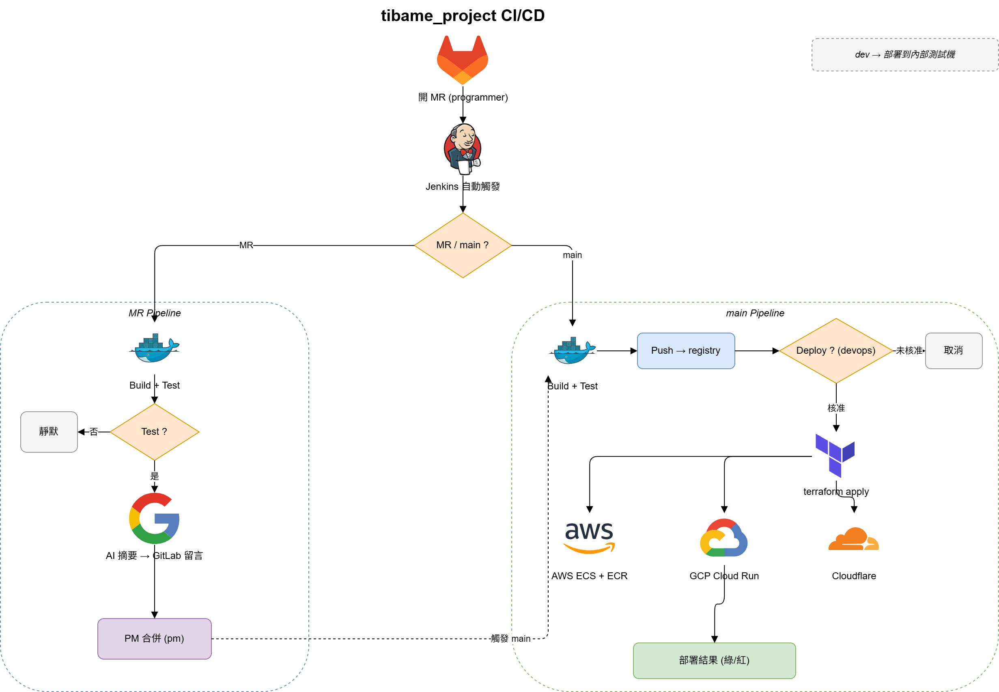

全自動化 CI/CD 流水線實作
這個專案是一條完整的 CI/CD 與多雲部署流程。以下以流程為主說明。
示範應用程式
一支用 Flask 寫的台股 0050 ETF 即時儀表板，資料來自 Yahoo Finance，以 Docker 容器執行、健康檢查端點為 /api/status。它在這裡的角色是「被部署的對象」。
成品畫面
CI/CD 流程
程式碼放在自架的 GitLab，CI 由自架的 Jenkins（multibranch pipeline）執行。推送與合併會自動觸發建置：GitLab 以 webhook 通知 Jenkins，另有每 2 分鐘的定期掃描作為後備。整體流程如下圖：

MR（開發中）流程
- 開發者推分支、開 Merge Request，Jenkins 自動建置該 MR。
- Build：以
docker build建置應用映像。 - Test：啟動容器，對健康檢查端點做測試。
- 測試失敗則靜默結束、不發任何通知；通過才進入下一步。
- AI Review：自動產生程式碼摘要並貼回 GitLab（見下一節）。
- PM 審核摘要後，把 MR 合併進 main。
main（合併後）流程
- Build → Test → Push：重新建置測試後，把映像推到私有 registry。
- 部署關卡：停在人工核准點，需由 devops 角色核准才繼續。
- 核准後執行部署（見「部署」一節）。
- 整條 main 流程用同一則可即時編輯的 Discord 訊息追蹤：建置、測試、推送、部署各階段的進度與成敗都更新在那一則訊息上。
角色分工
流程中以三個獨立的 GitLab 帳號分工：開發者負責開 MR、PM 負責審核與合併、devops 負責核准部署。
AI 程式碼審查
每個 MR 在測試通過後，會用 Flue 框架驅動 Gemini，讀取該次的 git diff，產生 100 字以內的中文審查摘要。
- 摘要由獨立的 AI Review 階段執行，排在任何部署通知之前。
- 產生後立即貼到該 MR 的 GitLab 留言，讓審核者快速掌握這次改了什麼、有無風險。
- Flue 依賴已預先打包進 CI 環境，摘要可即時產出。
部署
用 Terraform 以宣告式管理所有雲端資源，state 存在 AWS S3。同一份映像會部署到多個平台：
- AWS：映像推到 ECR，由 ECS 服務執行。
- GCP：推到 Artifact Registry，部署到 Cloud Run。
- Cloudflare：管理 DNS，並托管這個說明網站。
- 認證使用 OIDC（AWS）與 Workload Identity Federation（GCP），流程中不存放長期金鑰。
- dev 分支則部署到內部測試機，供開發驗證。
使用的工具
Jenkins、GitLab、Docker、Terraform、AWS（ECS、ECR）、GCP（Cloud Run、Artifact Registry）、Cloudflare、Gemini、Flue；應用程式為 Flask / Python。
有問題可以點右下角按鈕問 AI。